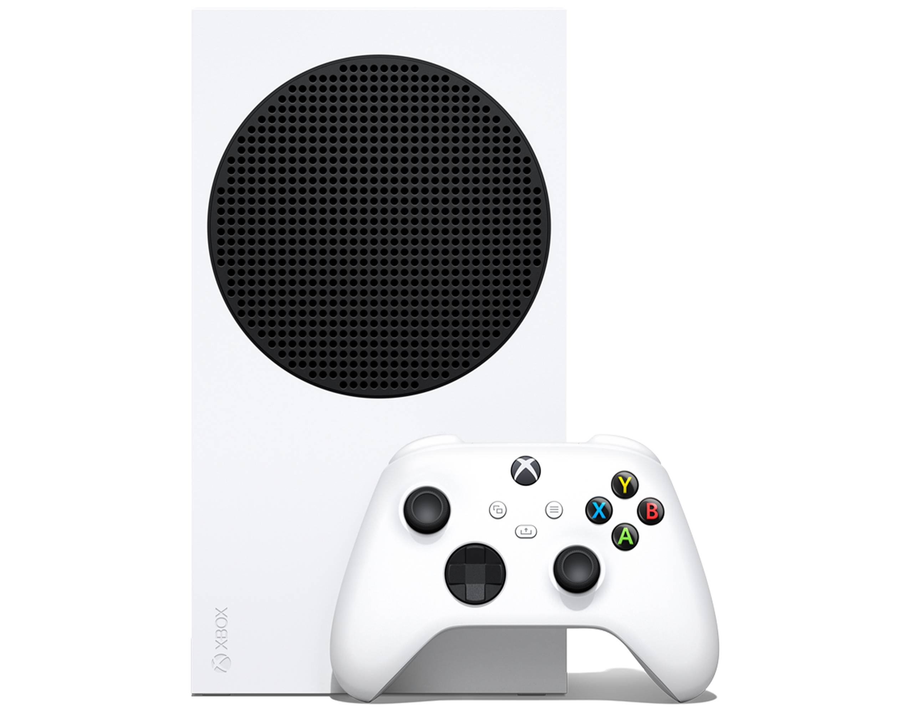

O Oculus Quest 2 utiliza a plataforma Qualcomm Snapdragon XR2 e 6 GB de RAM para melhor desempenho e gráficos de última geração. 256 GB de capacidade de armazenamento permite que você salve jogos e aplicativos. Resolução A tela para cada olho tem resolução de 1832 x 1920. O Oculus Quest 2 utiliza a plataforma Qualcomm Snapdragon XR2 e 6 GB de RAM para melhor desempenho e gráficos de última geração. 256 GB de capacidade de armazenamento permite que você salve jogos e aplicativos. Resolução A tela para cada olho tem resolução de 1832 x 1920. |
R$3000,00
comprar/adicionar ao carrinho
|
 O PlayStation 4, ou simplesmente PS 4, é o tão aguardado console da quarta geração da Sony, trazendo uma arquitetura semi-customizada da AMD com 8 GB de memória RAM GDDR5 compartilhada entre CPU e GPU (placa de vídeo). O PlayStation 4, ou simplesmente PS 4, é o tão aguardado console da quarta geração da Sony, trazendo uma arquitetura semi-customizada da AMD com 8 GB de memória RAM GDDR5 compartilhada entre CPU e GPU (placa de vídeo). |
R$ 2.385,00,
comprar/adicionar
|
| O Xbox Series S foi projetado para jogos sem disco a 1440p (com a capacidade de atingir 4K), com um SSD personalizado de 512GB. E, é claro, eles têm preços diferentes. Ambos os consoles têm a opção de expandir o armazenamento personalizado disponível através do Cartão de Expansão de Armazenamento da Seagate.
|
R$4.258,47
comprar/adicionar
|
 Sony PlayStation 5 (PS5) — Ficha Técnica Largura de banda da RAM: 448 GB/s; Taxa de transferência da RAM: 14 GB/s; Armazenamento interno: SSD customizado de 825 GB, barramento de 12 canais e controlador PCI Express 4.0, com taxa de transferência de 5,5 GB/s (tamanho original) ou 8,9 GB/s (compactado) Sony PlayStation 5 (PS5) — Ficha Técnica Largura de banda da RAM: 448 GB/s; Taxa de transferência da RAM: 14 GB/s; Armazenamento interno: SSD customizado de 825 GB, barramento de 12 canais e controlador PCI Express 4.0, com taxa de transferência de 5,5 GB/s (tamanho original) ou 8,9 GB/s (compactado) |
R$4.012,79.
comprar/adicionar
|
|
O Xbox Series X é o novo console da Microsoft com lançamento previsto para o fim de 2020, mas ainda sem preço definido para comprar. O aparelho é sucessor do Xbox One e Xbox One X, e pode ser considerado um dos videogames mais poderosos do mundo, com capacidade de reproduzir jogos em 4K a 120 FPS. |
R$3.800,00
comprar/adicionar ao carrinho
|
 Além da entrada normal do controle, é possível associar a entrada do giroscópio de controles de Switch, PlayStation e do Controle Steam a ações de emulação do mouse, permitindo controles de movimento. Além da entrada normal do controle, é possível associar a entrada do giroscópio de controles de Switch, PlayStation e do Controle Steam a ações de emulação do mouse, permitindo controles de movimento. |
R$389
comprar/adicionar ao carrinho
|
 O que é o Steam Deck? O Steam Deck é um console de videogame que pode ser considerado uma espécie de computador portátil. Uma das particularidades mais interessantes do dispositivo é o acesso à biblioteca da Steam, a maior plataforma de venda de jogos para computador O que é o Steam Deck? O Steam Deck é um console de videogame que pode ser considerado uma espécie de computador portátil. Uma das particularidades mais interessantes do dispositivo é o acesso à biblioteca da Steam, a maior plataforma de venda de jogos para computador |
R$4.280,00
comprar/adicionar ao carrinho
|
 O Nintendo Wii foi lançado em 2006 como sucessor do GameCube, sendo inclusive capaz de rodar jogos deste. É um videogame da sétima geração e o quinto console da Nintendo. O novo console possui um sistema de controle sem fios, o Wiimote, com acelerômetro capaz de detectar movimentos em 3D. O Nintendo Wii foi lançado em 2006 como sucessor do GameCube, sendo inclusive capaz de rodar jogos deste. É um videogame da sétima geração e o quinto console da Nintendo. O novo console possui um sistema de controle sem fios, o Wiimote, com acelerômetro capaz de detectar movimentos em 3D. |
R$409.90
comprar/adicionar ao carrinho
|